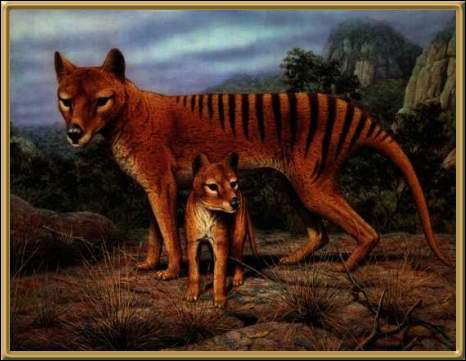
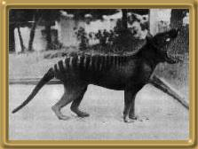
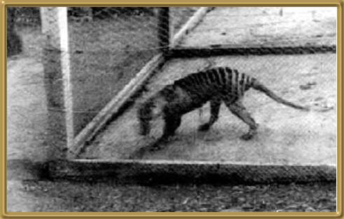
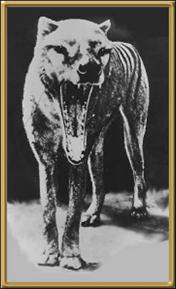

This animal is generally considered to be extinct, however there is still a reward for any information that proves it still exists. There have been numerous reported sightings, but none have developed into anything positive. Many people believe that it still exists in the Tasmanian wilderness, but so far, no proof. The photos are of the last known living tiger, in a zoo in Tasmania. The tragedy is that its extinction was totally unneccessary. It was widely known that the species was endangered and several calls were made to have it protected, but the government of the day refused to take the necessary steps to protect the tiger. The closest living relative is the Tasmanian Devil, which is itself an endangered species. The following photos were taken of the last remaining tiger in a Tasmanian zoo, c.1935.
Photographer: Unknown.


